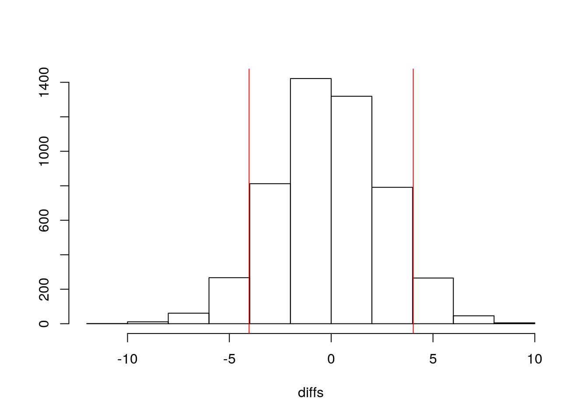
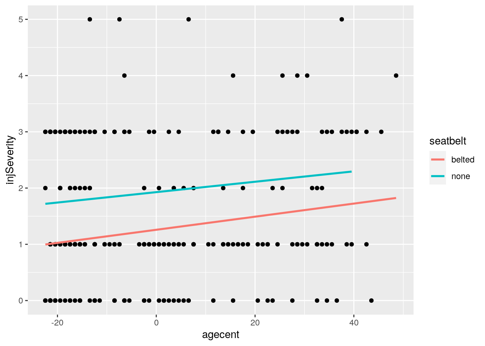
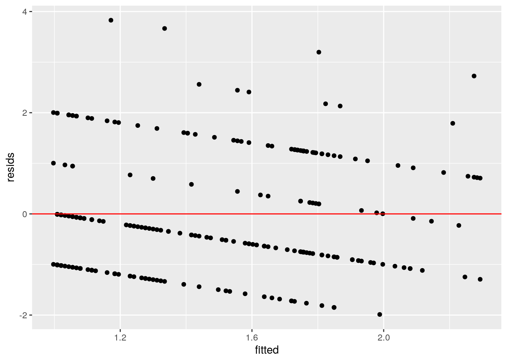
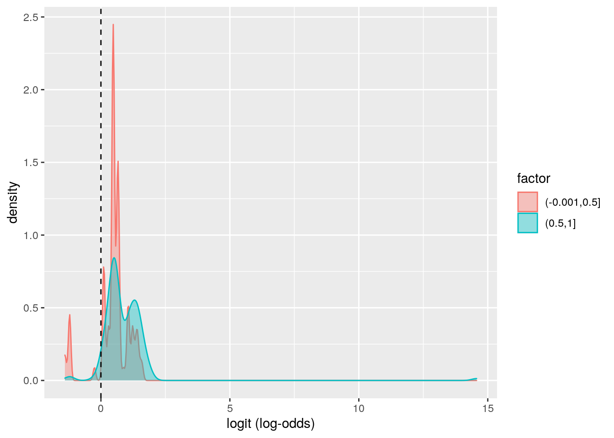
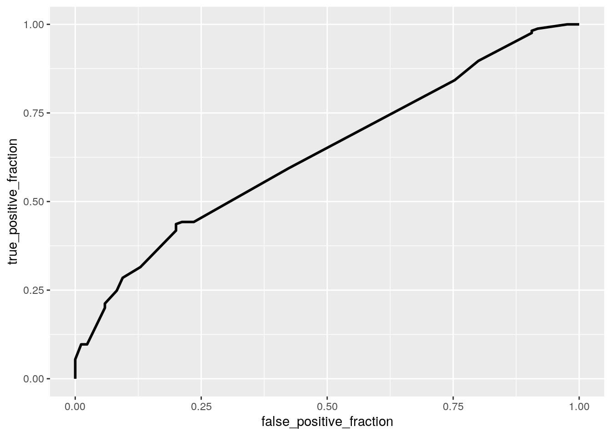

This is an R Markdown document. Markdown is a simple formatting syntax for authoring HTML, PDF, and MS Word documents. For more details on using R Markdown see http://rmarkdown.rstudio.com.
When you click the Knit button a document will be generated that includes both content as well as the output of any embedded R code chunks within the document. You can embed an R code chunk like this:
library(dplyr)##
## Attaching package: 'dplyr'## The following objects are masked from 'package:stats':
##
## filter, lag## The following objects are masked from 'package:base':
##
## intersect, setdiff, setequal, unionlibrary(ggplot2)
accidents <- read.csv("Airbag_data.csv")
accidents <- select(accidents, -2, -9)This is an adapted dataset from the DAAG package, which I downloaded from https://vincentarelbundock.github.io/Rdatasets/datasets.html. It includes data on police-reported car crashes in the U.S. from 1997-2002 in which there was harm to either people or property. The variable dvcat is the estimated impact speed in km/hr. The dead column shows either the front-seat occupants were dead or alive. Airbag indicates if there was an airbag in the car (none or airbag). Seatbelt indicates if the people in the car had a seat belt on (none or belted). Frontal shows if it was a frontal or non-frontal impact (0=non-frontal, 1=frontal. ageOFocc shows the age of occupants in years. YearVeh shows the model year of the vehicle. occRole shows whether the occupant was a driver or passenger. Deploy shows if the airbag was deployed(1) or not deployed/unknown(0), and injSeverity shows how serious the injury was (0 being no injury, and 4 being most severe injuries). There are 250 observations
#Perform a MANOVA testing whether any of your numeric variables (or a subset of them, if including them all is unreasonable or doesn’t make sense) show a mean difference across levels of one of your categorical variables (3). If they do, perform univariate ANOVAs to find response(s) showing a mean difference across groups (3), and perform post-hoc t tests to find which groups differ (3). Discuss the number of tests you have performed, calculate the probability of at least one type I error (if unadjusted), and adjust the significance level accordingly (bonferroni correction) before discussing significant differences (3). Briefly discuss MANOVA assumptions and whether or not they are likely to have been met (no need for anything too in-depth) (2).
man1<-manova(cbind(ageOFocc, yearVeh)~injSeverity, data=accidents)
summary(man1)## Df Pillai approx F num Df den Df Pr(>F)
## injSeverity 1 0.024272 3.0722 2 247 0.04809 *
## Residuals 248
## ---
## Signif. codes: 0 '***' 0.001 '**' 0.01 '*' 0.05 '.' 0.1 ' ' 1#univariate ANOVAs
summary.aov(man1)## Response ageOFocc :
## Df Sum Sq Mean Sq F value Pr(>F)
## injSeverity 1 2185 2184.58 5.6822 0.01789 *
## Residuals 248 95345 384.46
## ---
## Signif. codes: 0 '***' 0.001 '**' 0.01 '*' 0.05 '.' 0.1 ' ' 1
##
## Response yearVeh :
## Df Sum Sq Mean Sq F value Pr(>F)
## injSeverity 1 16.5 16.547 0.7717 0.3806
## Residuals 248 5317.8 21.443#post-hoc t tests
pairwise.t.test(accidents$ageOFocc, accidents$injSeverity, p.adj="none")##
## Pairwise comparisons using t tests with pooled SD
##
## data: accidents$ageOFocc and accidents$injSeverity
##
## 0 1 2 3 4
## 1 0.07718 - - - -
## 2 0.28599 0.89663 - - -
## 3 0.10384 0.97515 0.88554 - -
## 4 0.00069 0.00544 0.00883 0.00648 -
## 5 0.28585 0.61132 0.59320 0.62236 0.15521
##
## P value adjustment method: nonepairwise.t.test(accidents$yearVeh, accidents$injSeverity, p.adj="none")##
## Pairwise comparisons using t tests with pooled SD
##
## data: accidents$yearVeh and accidents$injSeverity
##
## 0 1 2 3 4
## 1 0.057 - - - -
## 2 0.283 0.828 - - -
## 3 0.397 0.327 0.654 - -
## 4 0.176 0.528 0.491 0.320 -
## 5 0.439 0.867 0.802 0.634 0.781
##
## P value adjustment method: none#Type 1 error rate
1-(.95^4) #1MANOVA, 1 ANOVA and 2 t tests ## [1] 0.1854938#Bonferroni correction
0.05/4## [1] 0.0125library(rstatix)##
## Attaching package: 'rstatix'## The following object is masked from 'package:stats':
##
## filtergroup <- accidents$injSeverity
DVs <- accidents %>% select(ageOFocc, yearVeh)
#Test multivariate normality for each group (null: assumption met)
sapply(split(DVs,group), mshapiro_test)## 0 1 2 3 4 5
## statistic 0.9136281 0.9639099 0.9527176 0.9701533 0.8986068 0.6835361
## p.value 0.0004813779 0.009092741 0.3328452 0.1417236 0.3657605 0.007342892#If any p<.05, stop. If not, test homogeneity of covariance matrices
#Box's M test (null: assumption met)
box_m(DVs, group)## # A tibble: 1 x 4
## statistic p.value parameter method
## <dbl> <dbl> <dbl> <chr>
## 1 16.7 0.339 15 Box's M-test for Homogeneity of Covariance Matric…lapply(split(DVs,group), cov)## $`0`
## ageOFocc yearVeh
## ageOFocc 299.18527 -11.78755
## yearVeh -11.78755 26.37113
##
## $`1`
## ageOFocc yearVeh
## ageOFocc 343.99248 15.27126
## yearVeh 15.27126 19.84343
##
## $`2`
## ageOFocc yearVeh
## ageOFocc 377.88538 -13.46245
## yearVeh -13.46245 20.02767
##
## $`3`
## ageOFocc yearVeh
## ageOFocc 509.3448 15.14180
## yearVeh 15.1418 19.16776
##
## $`4`
## ageOFocc yearVeh
## ageOFocc 333.36667 36.33333
## yearVeh 36.33333 10.26667
##
## $`5`
## ageOFocc yearVeh
## ageOFocc 518.25000 -77.83333
## yearVeh -77.83333 51.00000** The manova demonstrates that there was a signficant difference in injury severity levels across at least one of the dependent variables (age of occupants and the year of vehicle), as demonstrated by the p value of 0.04809. Therefore, I ran a univariate ANOVA along with 2 post-hoc t tests. This required 4 total tests (1 MANOVA, 1 ANOVA, and 2 t tests). The probability of at least 1 Type 1 error was 0.1854938. After using the Bonferroni correction, which was 0.5/#of tests, the significance value should be 0.0125. Using this correction, there was a significant difference between the age of occupants for individuals in an accident that resulted in an injury serverity level of 4, based on pvalues that are all below this threshold. Based on the yearVeh post-hoc t test, there was no difference in vehicle make year across the different injury severity levels. I then tested MANOVA assumptions, and found that the data is normal based on the mshapiro test. This does not meet the MANOVA assumptions because there is not a normal distribution, as evidenced by the p value that is less than 0.05. Based on the Box's M-test, the data does meet the criteria for homogeneity.**
#Perform some kind of randomization test on your data (that makes sense). The statistic can be anything you want (mean difference, correlation, F-statistic/ANOVA, chi-squared), etc. State null and alternative hypotheses, perform the test, and interpret the results (7). Create a plot visualizing the null distribution and the test statistic (3).
diffs<-vector()
for(i in 1:5000){
random <- accidents %>% mutate(age=sample(accidents$ageOFocc))
diffs[i] <- random %>% summarize(mean(age[seatbelt=="belted"]) - mean(age[seatbelt=="none"]))%>%pull
}
accidents %>% group_by(seatbelt) %>% summarize(mean=mean(ageOFocc))## `summarise()` ungrouping output (override with `.groups` argument)## # A tibble: 2 x 2
## seatbelt mean
## <fct> <dbl>
## 1 belted 39.8
## 2 none 35.739.77381-35.74390## [1] 4.02991mean(diffs>4.02991 | diffs < -4.02991)## [1] 0.128{hist(diffs,main="",ylab=""); abline(v = c(4.02991,-4.02991),col="red")}
I decided to test the correlation between age of occupants and whether or not they were wearing seatbelts. The null hypothesis is that there is no difference in the mean age of occupants who did and didn't wear seatbelts. The alternative hypothesis is that there is a significant difference in the mean age of those who did and didn't wear seatbelts. Based on the p value of 0.1302, we fail to reject our null hypothesis that there is no age difference between those who did and didn't wear seatbelts.
#Build a linear regression model predicting one of your response variables from at least 2 other variables, including their interaction. Mean-center any numeric variables involved in the interaction.
library(tidyr)
library(ggplot2)
accidents$agecent <- accidents$ageOFocc - mean(accidents$ageOFocc)
regression1 <- lm(injSeverity ~ seatbelt, data=accidents)
summary(regression1)##
## Call:
## lm(formula = injSeverity ~ seatbelt, data = accidents)
##
## Residuals:
## Min 1Q Median 3Q Max
## -1.9024 -0.9024 -0.2738 1.0976 3.7262
##
## Coefficients:
## Estimate Std. Error t value Pr(>|t|)
## (Intercept) 1.27381 0.09355 13.616 < 2e-16 ***
## seatbeltnone 0.62863 0.16334 3.848 0.000151 ***
## ---
## Signif. codes: 0 '***' 0.001 '**' 0.01 '*' 0.05 '.' 0.1 ' ' 1
##
## Residual standard error: 1.213 on 248 degrees of freedom
## Multiple R-squared: 0.05636, Adjusted R-squared: 0.05255
## F-statistic: 14.81 on 1 and 248 DF, p-value: 0.0001513regression2 <- lm(injSeverity ~ accidents$agecent, data=accidents)
summary(regression2)##
## Call:
## lm(formula = injSeverity ~ accidents$agecent, data = accidents)
##
## Residuals:
## Min 1Q Median 3Q Max
## -1.8902 -0.8125 -0.3439 1.1922 3.6467
##
## Coefficients:
## Estimate Std. Error t value Pr(>|t|)
## (Intercept) 1.480000 0.078056 18.961 <2e-16 ***
## accidents$agecent 0.009420 0.003952 2.384 0.0179 *
## ---
## Signif. codes: 0 '***' 0.001 '**' 0.01 '*' 0.05 '.' 0.1 ' ' 1
##
## Residual standard error: 1.234 on 248 degrees of freedom
## Multiple R-squared: 0.0224, Adjusted R-squared: 0.01846
## F-statistic: 5.682 on 1 and 248 DF, p-value: 0.01789regression3 <- lm(injSeverity~seatbelt*accidents$agecent, data=accidents)
summary(regression3)##
## Call:
## lm(formula = injSeverity ~ seatbelt * accidents$agecent, data = accidents)
##
## Residuals:
## Min 1Q Median 3Q Max
## -1.9880 -1.0087 -0.2357 1.0767 3.8283
##
## Coefficients:
## Estimate Std. Error t value Pr(>|t|)
## (Intercept) 1.258421 0.092606 13.589 < 2e-16 ***
## seatbeltnone 0.669049 0.162634 4.114 5.31e-05 ***
## accidents$agecent 0.011642 0.004565 2.550 0.0114 *
## seatbeltnone:accidents$agecent -0.002399 0.008512 -0.282 0.7783
## ---
## Signif. codes: 0 '***' 0.001 '**' 0.01 '*' 0.05 '.' 0.1 ' ' 1
##
## Residual standard error: 1.198 on 246 degrees of freedom
## Multiple R-squared: 0.08665, Adjusted R-squared: 0.07551
## F-statistic: 7.779 on 3 and 246 DF, p-value: 5.54e-05#Interpret the coefficient estimates (do not discuss significance) (10)
#Plot the regression using ggplot() using geom_smooth(method=“lm”). If your interaction is numeric by numeric, refer to code in the slides to make the plot or check out the interactions package, which makes this easier. If you have 3 or more predictors, just chose two of them to plot for convenience. (8)
accidents%>%ggplot(aes(x=agecent,y=injSeverity, group=seatbelt))+geom_point()+geom_smooth(method = 'lm',se=F, aes(color=seatbelt))## `geom_smooth()` using formula 'y ~ x'
#Check assumptions of linearity, normality, and homoskedasticity either graphically or using a hypothesis test (4)
#linearity and homoskedasticity
resids<-lm(injSeverity~seatbelt*accidents$agecent, data=accidents)$residuals
fitted<-lm(injSeverity~seatbelt*accidents$agecent, data=accidents)$fitted.values
ggplot()+geom_point(aes(fitted,resids))+geom_hline(yintercept=0, color='red')
#normality
shapiro.test(resids)##
## Shapiro-Wilk normality test
##
## data: resids
## W = 0.9381, p-value = 9.193e-09#Regardless, recompute regression results with robust standard errors via coeftest(..., vcov=vcovHC(...)). Discuss significance of results, including any changes from before/after robust SEs if applicable. (8)
install.packages("lmtest", repos= "http://cran.us.r-project.org")## Installing package into '/stor/home/jt38832/R/x86_64-pc-linux-gnu-library/3.6'
## (as 'lib' is unspecified)## Warning in install.packages("lmtest", repos = "http://cran.us.r-project.org"):
## installation of package 'lmtest' had non-zero exit statuslibrary(lmtest)## Loading required package: zoo##
## Attaching package: 'zoo'## The following objects are masked from 'package:base':
##
## as.Date, as.Date.numericlibrary(sandwich)
coeftest(regression3, vcov=vcovHC(regression3))##
## t test of coefficients:
##
## Estimate Std. Error t value Pr(>|t|)
## (Intercept) 1.2584206 0.0938246 13.4125 < 2.2e-16 ***
## seatbeltnone 0.6690493 0.1625370 4.1163 5.258e-05 ***
## accidents$agecent 0.0116423 0.0047849 2.4331 0.01568 *
## seatbeltnone:accidents$agecent -0.0023994 0.0090239 -0.2659 0.79055
## ---
## Signif. codes: 0 '***' 0.001 '**' 0.01 '*' 0.05 '.' 0.1 ' ' 1#What proportion of the variation in the outcome does your model explain? (4)
(sum((accidents$injSeverity-mean(accidents$injSeverity))^2)-sum(regression3$residuals^2))/sum((accidents$injSeverity-mean(accidents$injSeverity))^2)## [1] 0.0866484The coefficients estimate for injSeverity~seatbelt demonstrate that not wearing a seatbelt is associated with an increase in injury severity, as evidenced by the positive coefficient. The same is true for age; as age increases, so does injury severity as evidenced by the positive coefficient. The coefficient estimates for the injSeverity~seatbelt and agecent interaction shows that the slope of age on injury severity for those not wearing a seatbelt is -.002399 less than those wearing a seatbelt (not significant). It also shows that for every 1 year increase in age, the predicted injury severity for those wearing a seatbelt increases by .011642 (significant). Based on the plot of fitvals and resids, the data doesn't meet the assumptions of linearity or homoskedasticity since the data points slope downwards. The data is normal based on the greater than 0.5 p value from the Shapiro-Wilk normality test. Before and after using the robust standard errors, age was significantly associated with injury severity for those wearing a seatbelt and not wearing a seatbelt was significantly associated with injury severity for those at the average age. The proportion of variation in injury severity that is predicted by the model is 0.0866484, as evidenced by the R squared value.
#Rerun same regression model (with the interaction), but this time compute bootstrapped standard errors (either by resampling observations or residuals). Discuss any changes you observe in SEs and p-values using these SEs compared to the original SEs and the robust SEs)
library(dplyr)
fit1<-lm(injSeverity~seatbelt*agecent, data=accidents) #fit model
resids<-fit1$residuals #save residuals
fitted<-fit1$fitted.values #save yhats
resid_resamp<-replicate(5,{
new_resids<-sample(resids,replace=TRUE) #resample resids w/ replacement
accidents$new_y<-fitted+new_resids #add new resids to yhats to get new "data"
fit_new<-lm(new_y~seatbelt*agecent, data=accidents) #refit model
coef(fit_new) #save coefficient estimates (b0, b1, etc)
})
resid_resamp%>% t %>% as.data.frame%>%summarize_all(sd)## (Intercept) seatbeltnone agecent seatbeltnone:agecent
## 1 0.1540608 0.1509499 0.003573486 0.008211052The bootstrapped, robust, and original SEs are very similar to each other, with the seatbeltnone and seatbeltnone:agecent bootstrapped standard errors slightly larger than the robust and original standard errors and the agecent bootstrapped standard errors slightly smaller than the robust and original errors. Therefore, there would not be changes in significance based on the p values with the bootstrapped, robust, and original SEs.
#Fit a logistic regression model predicting a binary variable (if you don’t have one, make/get one) from at least two explanatory variables (interaction not necessary).
log.reg <- glm(frontal~dvcat+injSeverity, data=accidents, family="binomial")
coeftest(log.reg)##
## z test of coefficients:
##
## Estimate Std. Error z value Pr(>|z|)
## (Intercept) -1.21396 0.80256 -1.5126 0.130380
## dvcat10-2 15.96180 882.74375 0.0181 0.985573
## dvcat10-24 1.87191 0.82944 2.2568 0.024018 *
## dvcat25-39 2.81548 0.89036 3.1622 0.001566 **
## dvcat40-54 3.10116 1.04888 2.9566 0.003110 **
## dvcat55+ 2.98059 1.09928 2.7114 0.006700 **
## injSeverity -0.18177 0.12426 -1.4628 0.143513
## ---
## Signif. codes: 0 '***' 0.001 '**' 0.01 '*' 0.05 '.' 0.1 ' ' 1#Interpret coefficient estimates in context (10)
#Report a confusion matrix for your logistic regression (2)
#Compute and discuss the Accuracy, Sensitivity (TPR), Specificity (TNR), Precision (PPV), and AUC of your model (5)
library(glmnet)## Loading required package: Matrix##
## Attaching package: 'Matrix'## The following objects are masked from 'package:tidyr':
##
## expand, pack, unpack## Loaded glmnet 4.0-2prob <- predict(log.reg, type="response")
class_diag<-function(probs,truth){
tab<-table(factor(probs>.5,levels=c("FALSE","TRUE")),truth)
acc=sum(diag(tab))/sum(tab)
sens=tab[2,2]/colSums(tab)[2]
spec=tab[1,1]/colSums(tab)[1]
ppv=tab[2,2]/rowSums(tab)[2]
if(is.numeric(truth)==FALSE & is.logical(truth)==FALSE) truth<-as.numeric(truth)-1
#CALCULATE EXACT AUC
ord<-order(probs, decreasing=TRUE)
probs <- probs[ord]; truth <- truth[ord]
TPR=cumsum(truth)/max(1,sum(truth))
FPR=cumsum(!truth)/max(1,sum(!truth))
dup<-c(probs[-1]>=probs[-length(probs)], FALSE)
TPR<-c(0,TPR[!dup],1); FPR<-c(0,FPR[!dup],1)
n <- length(TPR)
auc<- sum( ((TPR[-1]+TPR[-n])/2) * (FPR[-1]-FPR[-n]) )
data.frame(acc,sens,spec,ppv,auc)
}
class_diag(prob,accidents$frontal)## acc sens spec ppv auc
## 1 0.676 0.9757576 0.09411765 0.6764706 0.6356506#Using ggplot, make a density plot of the log-odds (logit) colored/grouped by your binary outcome variable (3)
library(tidyverse)## ── Attaching packages ────────────────────────────────────────────────── tidyverse 1.3.0 ──## ✓ tibble 3.0.3 ✓ stringr 1.4.0
## ✓ readr 1.3.1 ✓ forcats 0.5.0
## ✓ purrr 0.3.4## ── Conflicts ───────────────────────────────────────────────────── tidyverse_conflicts() ──
## x Matrix::expand() masks tidyr::expand()
## x rstatix::filter() masks dplyr::filter(), stats::filter()
## x dplyr::lag() masks stats::lag()
## x Matrix::pack() masks tidyr::pack()
## x Matrix::unpack() masks tidyr::unpack()accidents$logit<-predict(log.reg, type="link")
factor= cut(accidents$frontal, 2)
accidents %>% ggplot(aes(logit, fill=factor, color=factor)) + geom_density(alpha=.4) +
geom_vline(xintercept=0,lty=2) + xlab("logit (log-odds)")
#Generate an ROC curve (plot) and calculate AUC (either manually or with a package); interpret (5)
library(plotROC)
prob<-predict(log.reg,type="response")
ROCplot<-ggplot(log.reg)+geom_roc(aes(d=frontal,m=prob), n.cuts=0)
ROCplot
calc_auc(ROCplot)## PANEL group AUC
## 1 1 -1 0.6356506The logistic regression model shows that in relation to a car going 1-9 km/h in an accident of average injury severity, there is an increase in the likelihood that the accident was of frontal impact for cars that were going 10km/h or above. This is evidenced by the positive coefficient estimates for all all of the dvcat categories. Additionally, the model shows that there is a signficant relationship between dvcat levels 10-24, 25-39, 40-54, and 55+ and the likelihood of a frontal impact, such that dvat25-39 has the strongest correlation with frontal impact (p=0.001566). The 10-2 dvcat category was likley a data input error that should have been 10-24. The confusion matrix shows that the model has high sensitivity and low specificity. The AUC value of 0.635 shows that the model does a poor job of predicting frontal accidents overall.
# Perform a logistic regression predicting the same binary response variable from ALL of the rest of your variables (the more, the better!)
log.reg2 <- glm(accidents$frontal~accidents$dead+accidents$airbag+accidents$seatbelt+accidents$sex+accidents$ageOFocc+accidents$yearVeh+accidents$occRole+accidents$deploy, family="binomial")
summary(log.reg2)##
## Call:
## glm(formula = accidents$frontal ~ accidents$dead + accidents$airbag +
## accidents$seatbelt + accidents$sex + accidents$ageOFocc +
## accidents$yearVeh + accidents$occRole + accidents$deploy,
## family = "binomial")
##
## Deviance Residuals:
## Min 1Q Median 3Q Max
## -2.1391 -0.7621 0.6325 0.8224 1.9509
##
## Coefficients:
## Estimate Std. Error z value Pr(>|z|)
## (Intercept) -8.564e+01 8.589e+01 -0.997 0.3187
## accidents$deaddead 1.067e+00 1.434e+00 0.744 0.4568
## accidents$airbagnone 2.644e+00 5.766e-01 4.586 4.51e-06 ***
## accidents$seatbeltnone -2.263e-01 3.193e-01 -0.709 0.4784
## accidents$sexm 6.972e-01 3.059e-01 2.279 0.0227 *
## accidents$ageOFocc 7.764e-04 7.870e-03 0.099 0.9214
## accidents$yearVeh 4.202e-02 4.307e-02 0.976 0.3292
## accidents$occRolepass 2.348e-02 3.755e-01 0.063 0.9501
## accidents$deploy 3.428e+00 6.472e-01 5.296 1.18e-07 ***
## ---
## Signif. codes: 0 '***' 0.001 '**' 0.01 '*' 0.05 '.' 0.1 ' ' 1
##
## (Dispersion parameter for binomial family taken to be 1)
##
## Null deviance: 320.52 on 249 degrees of freedom
## Residual deviance: 270.96 on 241 degrees of freedom
## AIC: 288.96
##
## Number of Fisher Scoring iterations: 4#Fit model, compute in-sample classification diagnostics (Accuracy, Sensitivity, Specificity, Precision, AUC), and interpret (5)
library(glmnet)
prob <- predict(log.reg2, type="response")
class_diag<-function(probs,truth){
tab<-table(factor(probs>.5,levels=c("FALSE","TRUE")),truth)
acc=sum(diag(tab))/sum(tab)
sens=tab[2,2]/colSums(tab)[2]
spec=tab[1,1]/colSums(tab)[1]
ppv=tab[2,2]/rowSums(tab)[2]
if(is.numeric(truth)==FALSE & is.logical(truth)==FALSE) truth<-as.numeric(truth)-1
#CALCULATE EXACT AUC
ord<-order(probs, decreasing=TRUE)
probs <- probs[ord]; truth <- truth[ord]
TPR=cumsum(truth)/max(1,sum(truth))
FPR=cumsum(!truth)/max(1,sum(!truth))
dup<-c(probs[-1]>=probs[-length(probs)], FALSE)
TPR<-c(0,TPR[!dup],1); FPR<-c(0,FPR[!dup],1)
n <- length(TPR)
auc<- sum( ((TPR[-1]+TPR[-n])/2) * (FPR[-1]-FPR[-n]) )
data.frame(acc,sens,spec,ppv,auc)
}
class_diag(prob,accidents$frontal)## acc sens spec ppv auc
## 1 0.744 0.9636364 0.3176471 0.7327189 0.7418538#Perform 10-fold (or repeated random sub-sampling) CV with the same model and report average out-of-sample classification diagnostics (Accuracy, Sensitivity, Specificity, Precision, and AUC); interpret AUC and compare with the in-sample metrics (10)
#kfold
#test
set.seed(1234)
k=10
data1<-accidents[sample(nrow(accidents)),] #put dataset in random order
folds<-cut(seq(1:nrow(accidents)),breaks=k,labels=F) #create folds
diags<-NULL
for(i in 1:k){ # FOR EACH OF 10 FOLDS
train<-data1[folds!=i,] # CREATE TRAINING SET
test<-data1[folds==i,] # CREATE TESTING SET
truth<-test$frontal
fit2 <- glm(frontal~dead+airbag+seatbelt+sex+ageOFocc+yearVeh+occRole+deploy, data=train, family="binomial")
prob2 <- predict(fit2, type="response", newdata=test)
diags<-rbind(diags,class_diag(prob2,truth)) #CV DIAGNOSTICS FOR EACH FOLD
}
summarize_all(diags,mean)## acc sens spec ppv auc
## 1 0.732 0.9506373 0.3003535 0.7266081 0.6804909#Perform LASSO on the same model/variables. Choose lambda to give the simplest model whose accuracy is near that of the best (i.e., lambda.1se). Discuss which variables are retained. (5)
y<-as.matrix(accidents$frontal) #grab response
frontal_preds<-model.matrix(frontal ~ -1 + ., data = accidents) #grab predictors
cv<-cv.glmnet(frontal_preds,y, family="binomial")
lasso_fit<-glmnet(frontal_preds,y, family="binomial",lambda=cv$lambda.1se)
predict(lasso_fit, frontal_preds, type="response")## s0
## 1 0.6619752
## 2 0.7300360
## 3 0.6205291
## 4 0.7587786
## 5 0.6619752
## 6 0.6721408
## 7 0.6904520
## 8 0.6841929
## 9 0.6643721
## 10 0.6475519
## 11 0.6708351
## 12 0.6408765
## 13 0.7499742
## 14 0.5370921
## 15 0.6748842
## 16 0.6972061
## 17 0.6619752
## 18 0.6273628
## 19 0.5541919
## 20 0.5541919
## 21 0.7300360
## 22 0.6475519
## 23 0.6708351
## 24 0.6643721
## 25 0.7300360
## 26 0.6408765
## 27 0.6708351
## 28 0.6475519
## 29 0.6848463
## 30 0.6945658
## 31 0.7300360
## 32 0.5683840
## 33 0.5683840
## 34 0.5541919
## 35 0.5284575
## 36 0.6847695
## 37 0.7534075
## 38 0.5587319
## 39 0.6341461
## 40 0.6341461
## 41 0.6578469
## 42 0.5469852
## 43 0.6904520
## 44 0.7553957
## 45 0.6643721
## 46 0.6708351
## 47 0.5211943
## 48 0.5284575
## 49 0.6408765
## 50 0.6708351
## 51 0.6708351
## 52 0.6721408
## 53 0.7067814
## 54 0.7127808
## 55 0.7033192
## 56 0.6678694
## 57 0.7669937
## 58 0.4200055
## 59 0.4200055
## 60 0.5443250
## 61 0.5770222
## 62 0.6847695
## 63 0.5541919
## 64 0.6619752
## 65 0.7033192
## 66 0.6812419
## 67 0.6379178
## 68 0.6408765
## 69 0.6708351
## 70 0.6408765
## 71 0.6408765
## 72 0.7033192
## 73 0.6708351
## 74 0.6475519
## 75 0.7479567
## 76 0.7479567
## 77 0.6910224
## 78 0.6910224
## 79 0.6619752
## 80 0.6475519
## 81 0.6408765
## 82 0.5284575
## 83 0.6841929
## 84 0.6613776
## 85 0.6945658
## 86 0.6408765
## 87 0.6408765
## 88 0.7300360
## 89 0.7300360
## 90 0.6408765
## 91 0.4454476
## 92 0.6904520
## 93 0.7850662
## 94 0.5469852
## 95 0.5211943
## 96 0.6408765
## 97 0.6708351
## 98 0.6708351
## 99 0.6408765
## 100 0.6512615
## 101 0.6643721
## 102 0.6904520
## 103 0.6678694
## 104 0.6512615
## 105 0.6904520
## 106 0.6643721
## 107 0.6408765
## 108 0.6408765
## 109 0.6408765
## 110 0.6643721
## 111 0.7669937
## 112 0.6972061
## 113 0.6475519
## 114 0.7300360
## 115 0.6379178
## 116 0.6708351
## 117 0.7300360
## 118 0.6475519
## 119 0.6475519
## 120 0.7184032
## 121 0.6721408
## 122 0.7767790
## 123 0.6512615
## 124 0.7444731
## 125 0.6708351
## 126 0.6945658
## 127 0.7564876
## 128 0.6972061
## 129 0.6847695
## 130 0.7587786
## 131 0.6408765
## 132 0.6408765
## 133 0.6408765
## 134 0.5555658
## 135 0.5298435
## 136 0.7067814
## 137 0.6408765
## 138 0.7184032
## 139 0.6512615
## 140 0.6341461
## 141 0.6847695
## 142 0.6408765
## 143 0.6512615
## 144 0.6273628
## 145 0.6578469
## 146 0.7242576
## 147 0.7499742
## 148 0.6408765
## 149 0.6643721
## 150 0.6643721
## 151 0.6408765
## 152 0.6847695
## 153 0.6708351
## 154 0.6408765
## 155 0.7499742
## 156 0.7300360
## 157 0.7033192
## 158 0.6643721
## 159 0.6972061
## 160 0.6578469
## 161 0.6512615
## 162 0.6847695
## 163 0.6945658
## 164 0.7007093
## 165 0.6972061
## 166 0.6619752
## 167 0.7242576
## 168 0.6619752
## 169 0.7242576
## 170 0.6708351
## 171 0.7033192
## 172 0.5355565
## 173 0.6341461
## 174 0.6475519
## 175 0.6643721
## 176 0.6643721
## 177 0.6708351
## 178 0.7127808
## 179 0.6408765
## 180 0.5284575
## 181 0.5284575
## 182 0.5587319
## 183 0.6910224
## 184 0.6643721
## 185 0.6972061
## 186 0.9498116
## 187 0.4382649
## 188 0.6643721
## 189 0.6748842
## 190 0.6972061
## 191 0.6619752
## 192 0.7033192
## 193 0.7772416
## 194 0.7499742
## 195 0.6708351
## 196 0.6408765
## 197 0.6910984
## 198 0.6475519
## 199 0.6643721
## 200 0.6643721
## 201 0.7499742
## 202 0.5325157
## 203 0.5469852
## 204 0.5139221
## 205 0.6512615
## 206 0.5683840
## 207 0.6904520
## 208 0.6408765
## 209 0.6273628
## 210 0.6273628
## 211 0.5587319
## 212 0.6408765
## 213 0.6408765
## 214 0.7850662
## 215 0.6847695
## 216 0.6972061
## 217 0.6643721
## 218 0.7669937
## 219 0.6619752
## 220 0.6408765
## 221 0.7617482
## 222 0.5469852
## 223 0.7499742
## 224 0.6643721
## 225 0.6475519
## 226 0.7388932
## 227 0.6273628
## 228 0.7033192
## 229 0.7587786
## 230 0.6910224
## 231 0.5211943
## 232 0.5427930
## 233 0.7669937
## 234 0.7184032
## 235 0.5066440
## 236 0.5066440
## 237 0.6273628
## 238 0.7499742
## 239 0.6273628
## 240 0.6972061
## 241 0.5284575
## 242 0.6475519
## 243 0.7553957
## 244 0.6341461
## 245 0.6684614
## 246 0.6512615
## 247 0.7587786
## 248 0.6972061
## 249 0.6966421
## 250 0.7357375coef(lasso_fit)## 18 x 1 sparse Matrix of class "dgCMatrix"
## s0
## (Intercept) 0.008528521
## dvcat1-9 -0.136765196
## dvcat10-2 .
## dvcat10-24 .
## dvcat25-39 .
## dvcat40-54 .
## dvcat55+ .
## deaddead .
## airbagnone 0.494342451
## seatbeltnone .
## sexm 0.103669058
## ageOFocc .
## yearVeh .
## occRolepass .
## deploy 0.909977482
## injSeverity .
## agecent .
## logit 0.160231244#Perform 10-fold CV using only the variables lasso selected: compare model’s out-of-sample AUC to that of your logistic regressions above (5)
set.seed(1234)
k=10
data <- accidents %>% sample_frac #put rows of dataset in random order
folds <- ntile(1:nrow(data),n=10) #create fold labels
diags<-NULL
for(i in 1:k){
train <- data[folds!=i,] #create training set (all but fold i)
test <- data[folds==i,] #create test set (just fold i)
truth <- test$frontal #save truth labels from fold i
fit <- glm(frontal~ airbag+sex+deploy,
data=train, family="binomial")
probs <- predict(fit, newdata=test, type="response")
diags<-rbind(diags,class_diag(probs,truth))
}
diags%>%summarize_all(mean)## acc sens spec ppv auc
## 1 0.744 0.9631373 0.3114646 0.7325369 0.728132The logisitc regression shows that there is a signficant correlation between whether or not the accident was frontal and whether there was an airbag, the driver was male, and the airbag was deployed. The confusion matrix shows that the model has high sensitivity, but low specificity. The AUC value (0.7418538) from this confusion matrix shows that the model does a fair job overall of predicting a frontal accident. Using the 10-fold CV, the accuracy, sensitivity, specificity, and precision values are slightly lower than in the previous model. Additionally, the 10-fold CV model does a poor job of predicting a frontal accident (0.6804909). The values that are retained by Lasso are dvcat 1-9, dvcat 10-24, airbagnone, sexm, and deploy, indicating that these are the most important predictors. After using only the variables retained by lasso, the AUC value is slightly lower than the original 10-fold CV model, and the accuracy, sensitivity, specficity, and precision are roughly equal. Note that the echo = FALSE parameter was added to the code chunk to prevent printing of the R code that generated the plot.